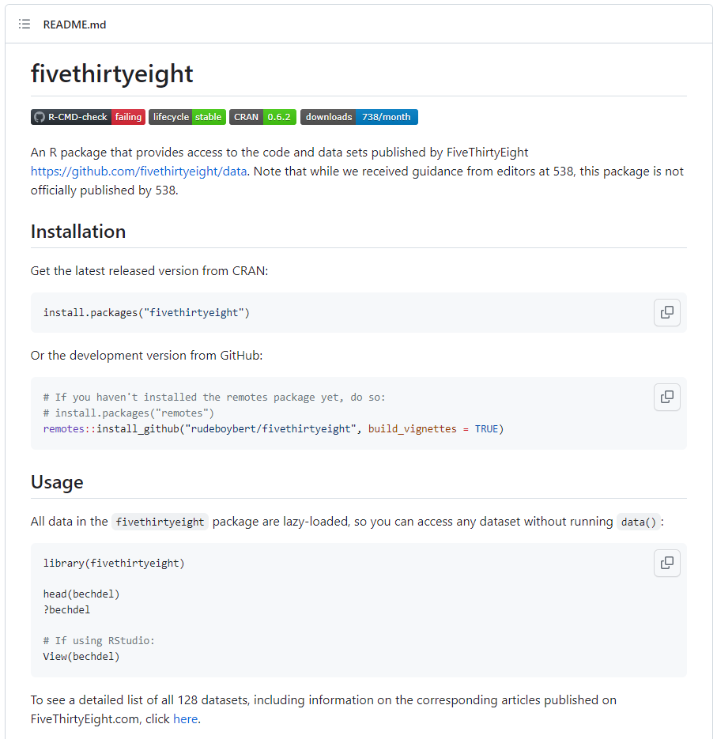
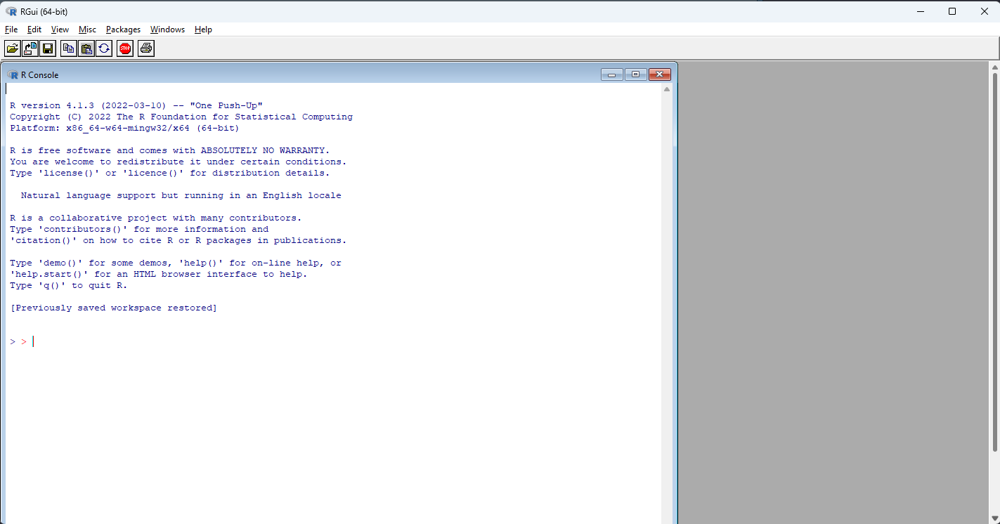
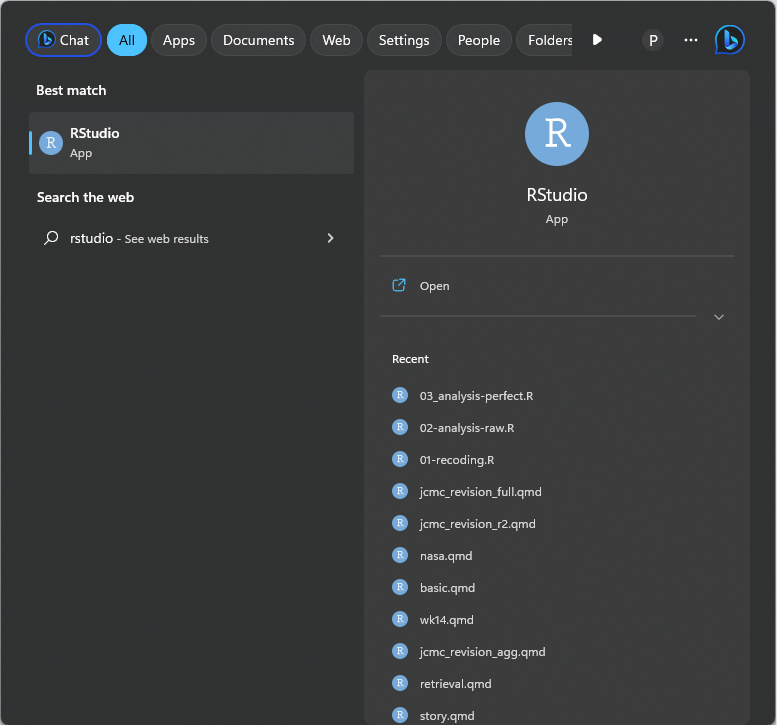
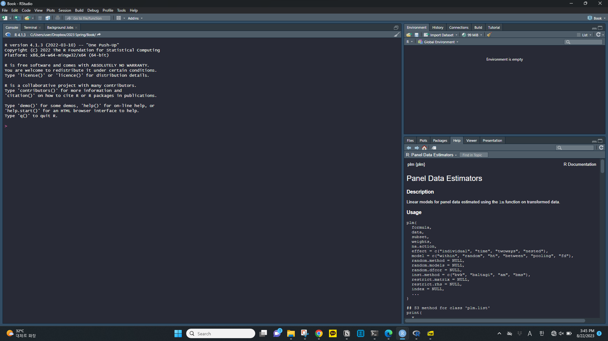

2+1[1] 3이 장에서는 드디어 R을 이용하기 위한 준비를 시작할 것입니다. 교재의 서두에서도 밝혔지만, R은 프로그래밍에 대한 서전 지식이 없는 사람들이 가장 쉽게 접근할 수 있는 프로그래밍 언어이면서도, 데이터의 수집, 분석, 시각화, 예측 뿐만 아니라 심지어 많은 독자들에게 분석 결과를 배포하는 것까지 하나의 프로그램 안에서 대부분 처리 가능하다는 점에서 정말 다재다능한 언어입니다. R(더 정확하게는 Rstudio)를 통해 할 수 있는 분석 결과 배포 방식에는 웹페이지나 블로그를 등 인터넷을 통한 것뿐 아니라, PDF, 파워포인트 프리젠테이션과 같은 조금 더 고전적인 형태의 출력 형태, 심지어 이용자가 이리저리 조작할 수 있는 웹애플리케이션을 만드는 것까지를 포함합니다.
이러한 유용성 때문에, 많은 데이터 저널리즘 전문가들은 R을 광범위하게 사용하고 있습니다. 특히 데이터 저널리즘 발전에서 선구적인 역할을 한 미국의 FiveThrityEight이 그렇고, 또 영국이 유명 주간지인 The Economist도 그렇습니다. 많은 사람들이 쓰는 프로그램이라는 것은 대단히 큰 이점입니다. 왜냐하면 프로그래머들은 자신이 아는 것, 알아낸 것을 많은 대중과 공유하는 고마운(?) 문화를 가지고 있기 때문이지요. 이러한 문화 덕분에 프로그래밍을 하다가 문제에 봉착했을 때, R과 같이 인기 있는 프로그램의 경우 잠깐의 인터넷 검색을 통해 대부분 그 답을 알 수 있는 것은 물론입니다. 하지만, 더 좋은 점은 데이터 저널리즘 전문가들이 자신이 데이터 수집, 분석, 보도에 사용한 코드와 데이터를 모두 공유하기도 한다는 점이지요. 다음 그림은 FiveThirtyEight이 프로그래밍 협업 플랫폼으로 유명한 Github에 자신들이 사용한 코드와 데이터를 공유하고 있는 모습니다.

더 정확하게는 위의 페이지에서 FiveThirtyEight은 자신들이 사용한 데이터와 코드를 공개하는데 그치지 않고, 이를 R을 이용하는 다른 사람들이 손쉽게 이용하도록 일종의 ’미니 프로그램’의 형태로 제공하고 있습니다(나중에 보겠지만 R에서는 이를 ’패키지’라고 합니다). 이는 더 이상 FiveThirtyEight만의 특이한 행동은 아닙니다. BBC, 이코노미스트, 뉴욕타임즈 등 대부분의 세계적인 언론사들은 유사한 공유 공간을 활용하고 있습니다. 만약 여러분이 하고자 하는 보도가 이렇게 세계 유수 언론사들의 이미 한 보도와 유사점을 가지고 있다면, 모든 것을 처음부터 프로그래밍할 필요 없이 이렇게 투명하게 공유된 정보를 응용하는 것이 효율적이기도 하거니와, 데이터 저널리즘 공동체가 공유하는 일종의 문화이기도 합니다.
이제 R과 Rstudio를 살펴보도록 하지요. 여기서는 여러분이 R과 Rstudio를 이미 설치했다고 가정할 것입니다. 만약 여러분이 R과 Rstudio을 전혀 접해본 적이 없어 설치부터 시작해야 한다면, 부록으로 실어둔 [Chapter -@appendix-install]을 참조해 주시기 바랍니다.
먼저, R은 윈도우 시작 버튼을 눌러 실행할 수 있습니다. 시작 화면에서 전체 애플리케이션을 열면, 여러분의 컴퓨터에 설치된R은 보통 다음과 같이 나타납니다.

제 경우에는 여러 버전의 R을 설치하다보니 여러 가지의 R이 보이는데요, 그 중에서 버전이 가장 높은 것을 선택하시면 됩니다. i386과 x64는 여러분이 사용하는 컴퓨터의 환경과 관련이 있는데, 대부분의 요즘 컴퓨터는 x64라고 생각하시면 됩니다. 따라서 위의 경우에는 R x64 4.1.3을 선택하면 되겠네요. 이를 실행하면 다음과 같은 화면이 나타나게 됩니다.

화면에 가장 크게 보이는 하얀 창이 바로 R의 핵심인 콘솔(Console) 입니다. 여기에 이러저러한 명령을 하고 엔터를 치면 R은 해당 명령을 수행한 결과를 표시해 줍니다. R을 사용하는 가장 단순한 방법은 계산기 처럼 활용하는 것입니다. 예컨대 2+1이라는 연산을 한다고 해 볼까요? 그 때는 가장 단순하게 다음과 2+1이라고 콘솔에 쓰시고 엔터키를 치시면 됩니다. 그러면 다음과 같은 결과를 볼 것입니다.
2+1[1] 3물론, 여러분이 나중에 작성하게될 코드는 이 보다 훨씬 복잡합니다. 간단하게는 몇 줄, 조금 복잡한 분석을 한다면 수백, 수천줄 짜리 코드를 작성하는 일도 많죠 (이 교재에서는 10줄, 고작해야 20줄을 넘는 일도 거의 없을 것입니다. 그 정도로도 당분간 충분하니 걱정마세요!). 그렇다면 코드를 한줄 쓰고 실행하는 이런 단순한 방식은 아무래도 불편하겠지요. 그것이 아니더라도, 위의 화면은 무엇인가 90년대 컴퓨터에서나 돌아갈 것 같은 구닥다리 같은 느낌이 있지요. 사실 앞서 이야기한 R의 다양한 기능을 최대한 활용하기 위해서 대부분의 사람들은 위와 같은 화면에서 R을 사용하지 않습니다. 대신 Rstudio를 사용하지요.
여러분 컴퓨터에 설치된 Rstudio를 사용하는 가장 간단한 방법은 윈도우즈 화면 하단 시작 버튼 옆의 검색창에 ’Rstudio’라고 검색해 보는 것입니다. Rstudio가 올바르게 설치되어 있다면, 다음과 유사한 화면을 보게 될 것입니다.
 이제 Rstudio를 선택해서 프로그램을 실행시키면 다음과 같은 화면이 나타납니다.  바탕화면은 초기설정에 따라 위와 같이 어두운 색이기도, 밝은 색이기도 합니다. 아무래도 R을 실행했을 때보다 어딘가 프로패셔널해보이기도 하지요? Rstudio는 R을 편리하게 사용할 뿐만 아니라, R의 더 많은 기능을 이끌어내기 위해 만들어낸 인터페이스라고 생각하시면 됩니다. 전문적인 용어로는 통합개발환경(IDE)라고 하지요. 비유하자면, R가 엔진이라면, Rstudio는 여러분이 직접 운전하는 자동차와 같은 관계이지요. 엔진을 이용해 직접 가능한 탈것을 만드는 사람은 극히 제한적이듯, 대부분의 사람들은 Rstudio를 사용하지, R을 직접 사용하지 않습니다. 따라서, 여러분들 역시 앞으로 Rstudio만을 사용하게 될 것입니다.
위 화면에 보이는 가장 큰 공간은 R의 콘솔 입니다. 앞서 본 콘솔과 같은 콘솔이지요. 따라서 앞서 했던 것처럼 2+1라고 치고 엔터를 치면 아까와 같은 결과가 나올 것입니다. 그러면, 결국 모양만 조금 세련되게 바뀐 것이냐고 반문하실 수 있지만, 물론 그렇지 않습니다. 다음 장에서 프로젝트와, Quarto라는 환경을 설명하면서, Rstudio가 어떻게 컴퓨터 연산과 기사 작성을 동시에 효율적으로 할 수 있도록 도와주는지 살펴보겠습니다.